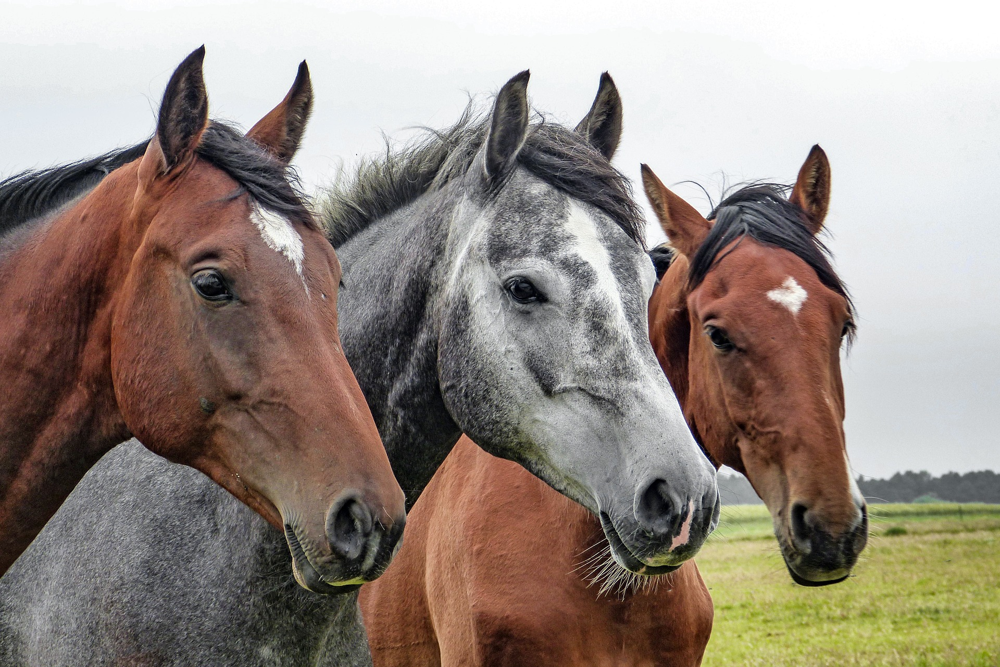
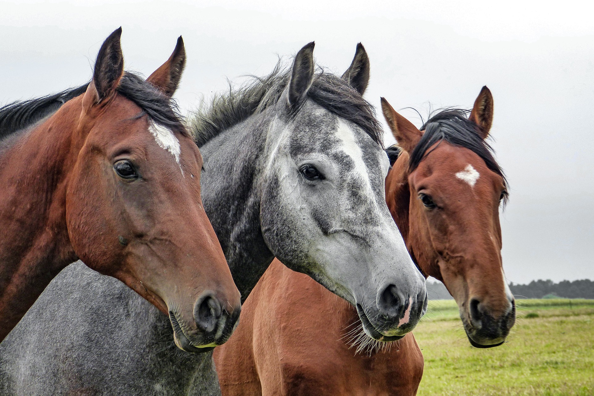
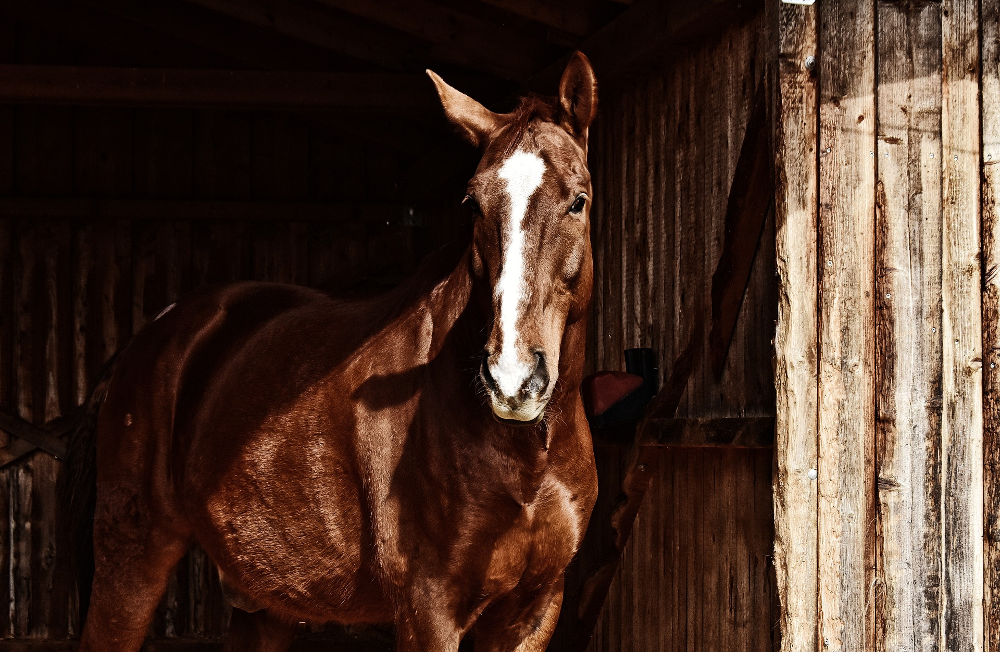
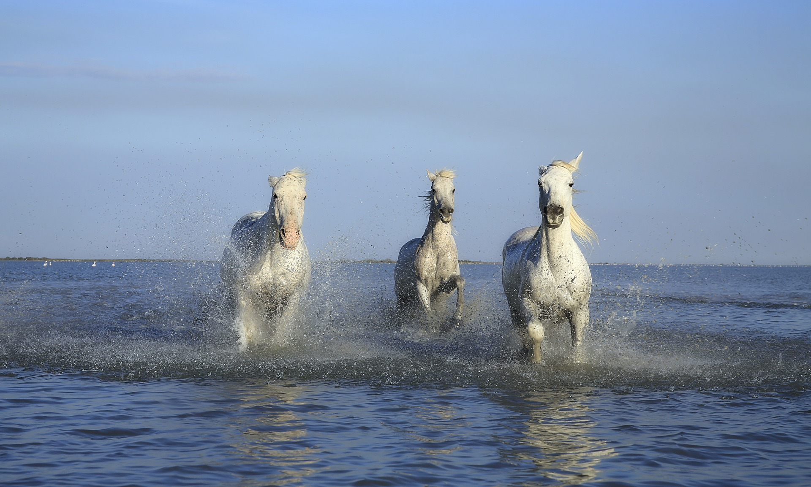
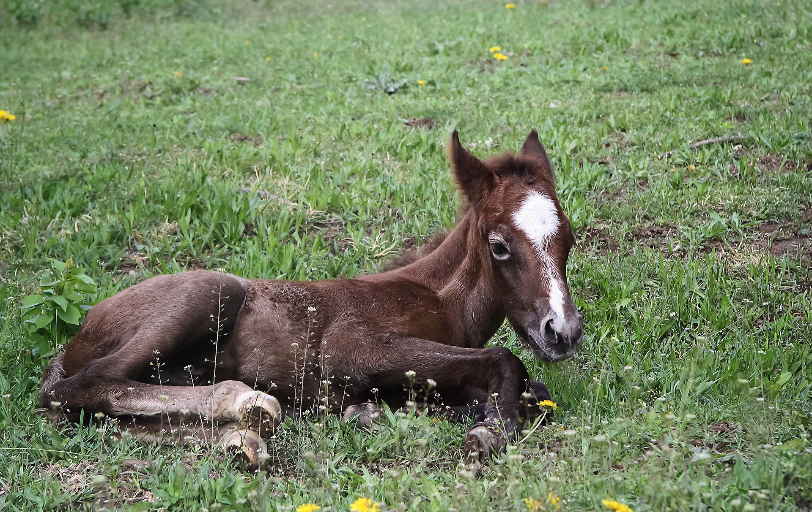
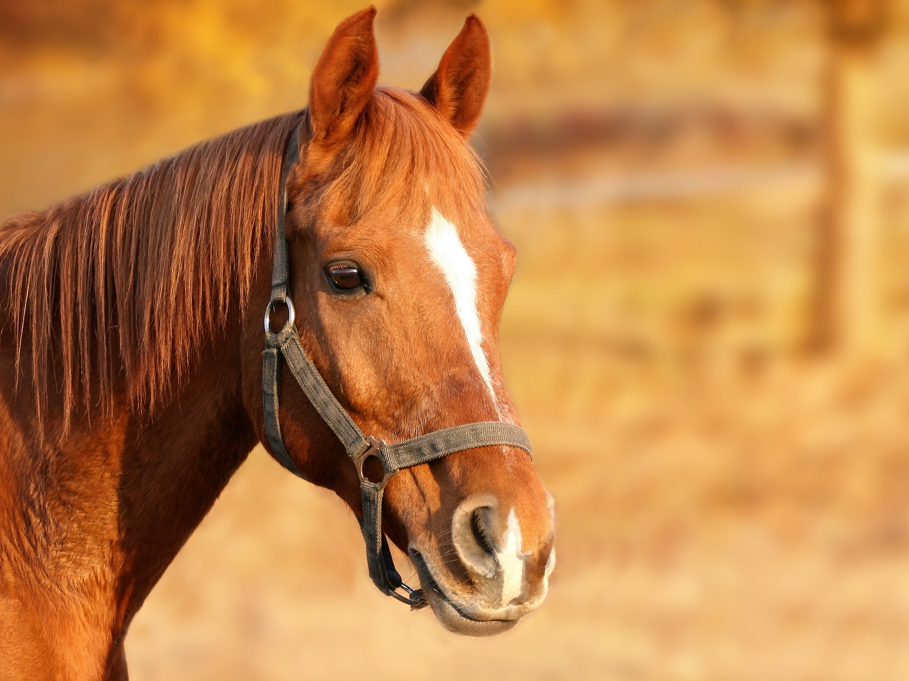
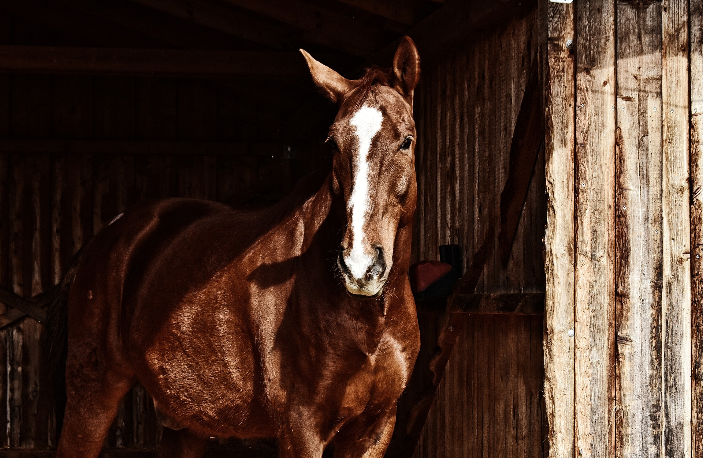
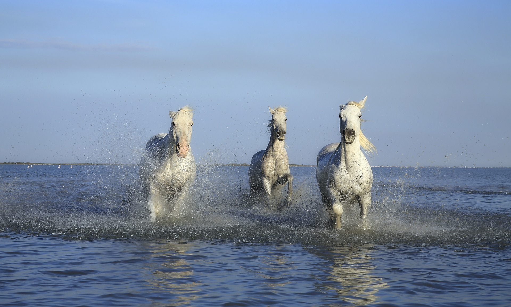
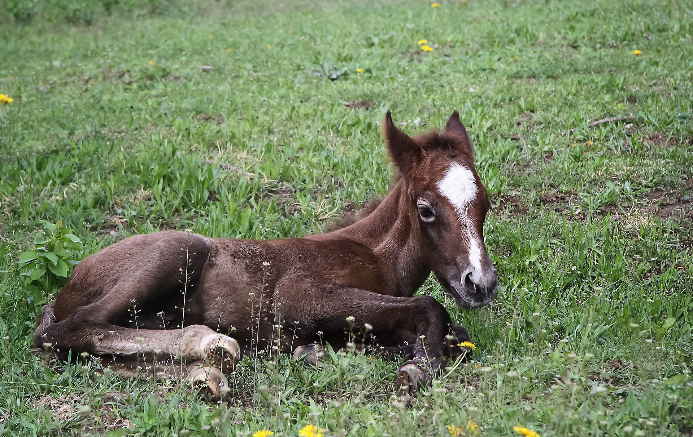
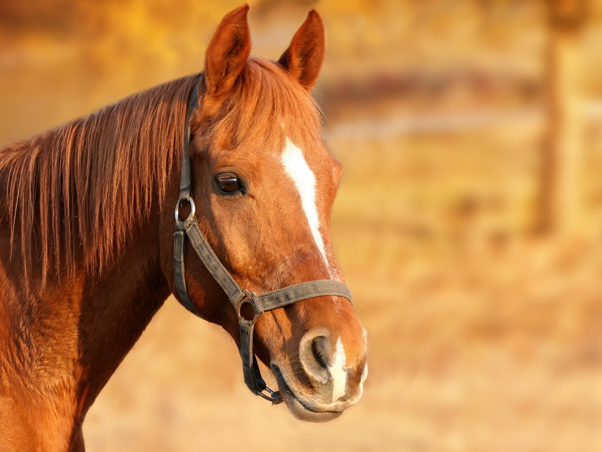

Horses
The horse (Equus ferus caballus)[2][3] is one of two extant subspecies of Equus ferus. It is an odd-toed ungulate mammal belonging to the taxonomic family Equidae. The horse has evolved over the past 45 to 55 million years from a small multi-toed creature, Eohippus, into the large, single-toed animal of today. Humans began domesticating horses around 4000 BC, and their domestication is believed to have been widespread by 3000 BC. Horses in the subspecies caballus are domesticated, although some domesticated populations live in the wild as feral horses. These feral populations are not true wild horses, as this term is used to describe horses that have never been domesticated, such as the endangered Przewalski's horse, a separate subspecies, and the only remaining true wild horse. There is an extensive, specialized vocabulary used to describe equine-related concepts, covering everything from anatomy to life stages, size, colors, markings, breeds, locomotion, and behavior.
 

 







American Quarter Horse
The American Quarter Horse, or Quarter Horse, is an American breed of horse that excels at sprinting short distances. Its name came from its ability to outdistance other horse breeds in races of a quarter mile or less; some have been clocked at speeds up to 55 mph (88.5 km/h). The American Quarter Horse is the most popular breed in the United States today, and the American Quarter Horse Association is the largest breed registry in the world, with almost 3 million living American Quarter Horses registered in 2014.[1] The American Quarter Horse is well known both as a race horse and for its performance in rodeos, horse shows and as a working ranch horse. The compact body of the American Quarter Horse is well-suited to the intricate and speedy maneuvers required in reining, cutting, working cow horse, barrel racing, calf roping, and other western riding events, especially those involving live cattle. The American Quarter Horse is also shown in English disciplines, driving, and many other equestrian activities. The American Quarter Horse is best known today as a show horse, race horse, reining and cutting horse, rodeo competitor, ranch horse, and all-around family horse. Quarter Horses compete well in rodeo events such as barrel racing, calf roping and team roping;[25][26] and gymkhana or O-Mok-See.[27] Other stock horse events such as cutting and reining are open to all breeds but also dominated by American Quarter Horse. Large purses allow top competitors to earn over a million dollars in these events.[citation needed] The breed is not only well-suited for western riding and cattle work. Many race tracks offer Quarter Horses a wide assortment of pari-mutuel horse racing with purses in the millions.[26] Quarter Horses have also been trained to compete in dressage and can be good jumpers. They are also used for recreational trail riding and in mounted police units.[17] The American Quarter Horse has also been exported worldwide. European nations such as Germany and Italy have imported large numbers of Quarter Horses. Next to the American Quarter Horse Association (which also encompasses Quarter Horses from Canada), the second largest registry of Quarter Horses is in Brazil, followed by Australia.[28]With the internationalization of the discipline of reining and its acceptance as one of the official seven events of the World Equestrian Games, there is a growing international interest in Quarter Horses. Countries like Japan, Switzerland and Israel that did not have traditional stock horse industries have begun to compete with American Quarter Horses in their own nations and internationally.[citation needed] The American Quarter Horse is the most popular breed in the United States today, and the American Quarter Horse Association is the largest breed registry in the world, with over 5 million American Quarter Horses registered worldwide.[29]
Clydesdalese
The Clydesdale is a breed of draft horse named for and derived from the farm horses of Clydesdale, a county in Scotland. Although originally one of the smaller breeds of draught horses, it is now a tall breed. Often bay in color, they show significant white markings due to the presence of sabino genetics. The breed was originally used for agriculture and haulage, and is still used for draught purposes today. The Budweiser Clydesdales are some of the most famous Clydesdales, and other members of the breed are used as drum horses by the British Household Cavalry. They have also been used to create and improve other breeds. The breed was developed from Flemish stallions imported to Scotland and crossed with local mares. The first recorded use of the name "Clydesdale" for the breed was in 1826, and by 1830, a system of hiring stallions had begun that resulted in the spread of Clydesdale horses throughout Scotland and into northern England. The first breed registry was formed in 1877. In the late 19th and early 20th centuries, thousands of Clydesdales were exported from Scotland and sent throughout the world, including to Australia and New Zealand, where they became known as "the breed that built Australia". However, during World War I, population numbers began to decline due to increasing mechanization and war conscription. This decline continued, and by the 1970s, the Rare Breeds Survival Trust considered the breed vulnerable to extinction. Population numbers have increased slightly in the intervening time, but they are still thought to be vulnerable.
Miniature Horses
Miniature horses were first developed in Europe in the 1600s, and by 1765 they were seen frequently as the pets of nobility. Others were used in coal mines in England and continental Europe.[9] The English began using small ponies in their mines after the Mines and Collieries Act 1842 prohibited the use of young children as mine workers. Shetland ponies were most frequently seen, although any small, strong ponies that would fit in the small mine shafts were used as pit ponies. The first small horses in the United States date to 1861, when John Rarey imported four Shetland ponies, one of which was 24 inches (61 cm) tall.[2] Additional small British horses, as well as small Dutch mine horses, were brought to the US throughout the late 1800s.[10] These small horses continued the work of their British relatives, being employed in the coal mines of the eastern and central US until the mid-1900s.[2] In the 1960s, public appreciation for miniature horses began to grow, and they were increasingly used in a number of equestrian disciplines.[10] The Falabella miniature horse was originally developed in Argentina in the mid-1800s by Patrick Newtall. When Newtall died, the herd and breeding methods were passed to Newtall's son-in-law, Juan Falabella. Juan added additional bloodlines including the Welsh Pony, Shetland pony, and small Thoroughbreds. With considerable inbreeding he was able to gain consistently small size within the herd.[11] The South African Miniature Horse was developed in South Africa and has a wide range of conformations represented in its population. Some resemble miniature Arabians, while others appear to be scaled-down versions of draft horses.[12] Wynand de Wet was the first breeder of miniature horses in South Africa, beginning his program in 1945 in Lindley, South Africa. Other breeders soon followed, with many using Arabian horses in their breeding programs. In 1984, a breed registry was begun, and the national livestock association recognized the South African Miniature Horse as an independent breed in 1989. There are approximately 700 miniature horses registered in South Africa.[13] There are two registries in the United States for miniature horses: the American Miniature Horse Association (AMHA) and the American Miniature Horse Registry (AMHR). The AMHA was founded in 1978 and was dedicated to establishing the Miniature horse as a distinct breed of horse.[1][2] Many of the international organizations are associated with the AMHA, including clubs throughout Canada and in several European countries.[3] The AMHR is a division of the American Shetland pony Club and was established as a separate registry in 1972.[4] Worldwide, there are dozens of miniature horse registries. Some organizations emphasize breeding of miniatures with horse characteristics, others encourage minis to retain pony characteristics. Along with registries for miniature horses in general, there are also breed-specific registries, such as several for the Falabella horse.[5] In the AMHR, Miniatures cannot exceed 38 inches at the withers (which the AMHR defines as located at the last hair of the mane). There are two divisions in AMHR: the "A" division for horses 34 inches (86 cm) and under, and the "B" division for horses 34 to 38 inches (86 to 97 cm).[6] The AMHA requires that horses stand under 34 inches. Horses of any eye or coat color, and any form of white markings, are allowed to be registered. The AMHA standard suggests that if a person were to see a photograph of a miniature horse, without any size reference, it would be identical in characteristics, conformation, and proportion to a full-sized horse.[1] According to the AMHR, a "Miniature should be a small, sound, well-balanced horse and should give the impression of strength, agility and alertness. A Miniature should be eager and friendly but not skittish in disposition."[4] They are generally quite hardy, often living longer on average than some full-sized horse breeds; the average life span of miniature horses is from 25 to 35 years.[7] However, there are also some health issues that are more frequently found in miniature horses than their full-sized relatives. Overfeeding is a common problem in miniature horses, leading to obesity; this is especially true when owners are used to owning full-sized horses. Dental issues, including crowding, brachygnathism (overbites) and prognathism (underbites) are frequently seen, due to having the same number of teeth in a much smaller mouth. They can also experience retention of deciduous teeth (baby teeth) and sinus problems from overcrowding. The combination of a propensity for overeating and dental problems can lead to an increased occurrence of colic. A major metabolic problem seen more frequently in miniature horses is hyperlipemia, where an appetite-reducing stressor can cause the body to break down significant amounts of fat, overwhelming the liver and potentially leading to liver failure. Reproduction is also more difficult in miniature horses, with a higher incidence of difficult births and a greater potential for eclampsia. The majority of the health problems seen more frequently in miniature horses are easily rectified with proper feeding and maintenance.[8] tralia and New Zealand, where they became known as "the breed that built Australia". However, during World War I, population numbers began to decline due to increasing mechanization and war conscription. This decline continued, and by the 1970s, the Rare Breeds Survival Trust considered the breed vulnerable to extinction. Population numbers have increased slightly in the intervening time, but they are still thought to be vulnerable.